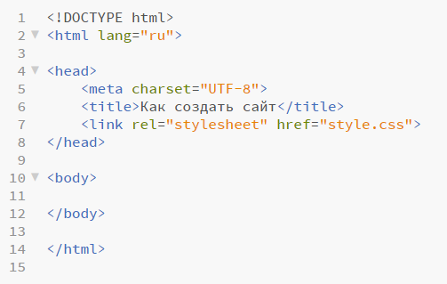
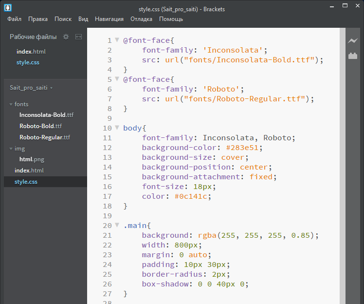

Создание сайтов с нуля
Основы основ
Код сайта принято делить на две составляющие: frontend и backend.
Backend - это сама программа, которая выполняется на сервере. Frontend - это то, что мы видим, то есть текст, картинки, различные элементы. Он обычно состоит из кода на html и css.
Структура сайта
Сайт представляет из себя папку с файлами, загруженную на сервер (можно просто запустить главный файл на компьютере в браузере, не загружая ничего на сервер). Всегда должен быть html-файл для каждой страницы, css-файл(ы) для оформления этих страниц, почти всегда есть папки для изображений и шрифтов. Самое главное здесь - html, всё остальное подключается из него.
Html
Html отвечает за само содержание сайта без дизайна. Чтобы начать создание сайта, нужно написать стандартную структуру html в файле index.html в папке сайта.
{kind=link}
Первая строка в этом примере означает начало документа для 5-ой версии html. Открывающийся и закрывающийся теги <html> </html>, никакого смысла не несут, но их желательно всегда прописывать. Также, в открывающемся теге бывают атрибуты. Например, атрибут lang в теге <html> (<html lang="ru">) нужен для указания основного языка страницы.
Внутри тега <html> расположены <head> и <body>. В <head> находятся основные настройки и подключения. В данном случае это:
1) кодировка;
2) заголовок, который виден наверху в списке открытых вкладок;
3) подключение файла css.
А в <body> находятся сами элементы страницы. Они тоже обозначаются тегами. Их мы сейчас подробно разбирать не будем, но вот два самых простых:
1) <p> - параграф, нужен для абзаца текста. Специальных атрибутов нет, текст пишется внутри тега.
<p>Hello world!</p>
Результат:
Hello world!
2) <a> - ссылка. Основной атрибут - href, указывает путь, куда ведет ссылка.
<a href = "http://google.com">Google.com</a>
Результат:
Так как теги можно писать внутри друг друга, ее можно поставить, например, внутри параграфа.
<p><a href = "http://yandex.ru">Yandex</a> vs <a href = "http://google.com">Google</a></p>
Результат:
Также, у ссылок есть атрибут target, отвечающий за то, откроется ли ссылка в новой вкладке.
<a href = "http://yandex.ru" target = "_blank">Yandex</a>
Результат:
Кроме этих тегов есть еще специальные теги для картинок, видео, и других элементов.
Также, у всех тегов есть необязательные атрибуты class и id. Они принимают текстовое значение в кавычках, например:
<p class = "123">Text</p>
<p id = "abcde">Hi!</p>
Пока что для нас они ничего не значат.
Css
Css отвечает за дизайн сайта. Это шрифты, цвет или размер любого элемента, их расположение, анимации, дополнительные эффекты и т.д. Он подкючается к файлу html при помощи тега link, который нужен для различных подключений. Нам для этого понадобится два атрибута:
<link rel = "stylesheet" href = "style.css">
rel = "stylesheet" - это значение нужно прописывать для того, чтобы указать браузеру, что в указанном файле содержится таблица стилей;
href = "style.css" - здесь нужно указать путь до файла, поэтому это не обязательно style.css.
Вот пример css-файла этой страницы (здесь его, конечно, видно не полностью):
{kind=link}
Каждая часть таблицы стилей содержится в скобках {}. Перед ними стоит слово. Также, оно может начинаться на ".", "#" или "@". Внутри скобок содержится набор свойств, которые хотим указать. Сейчас разберем только 3 случая:
1) просто_слово{} - это значит, что мы хотим прописать свойства для всех элементов какого-то тега, например, здесь для параграфа:
p{color: #fff;}
2) .слово{} - обращаемся ко всем элементам с таким классом:
.123{background-color: #f11;}
3) #слово{} - обращаемся к элементу с таким id:
#abcde{font-size: 30px;}
Причем если какое-то свойство прописано для тега и для класса или id, то если элемент принадлежит и к тому, и к другому, оно применяется как написано в самом верхнем в этом списке:
1) id
2) класс
3) тег
Например, вот что написано в html:
<p class="text">Hello</p>
И вот в css:
p{font-size: 25px;}
.text{font-size: 20px;}
Тогда применится именно font-size: 20px, так как класс выше тега.
Вот несколько простых свойств, которые можно применить к изученным тегам, то есть <html>, <body>, <p>, <a>:
1. Для <html> или <body>:
1) background-color - цвет фона всего сайта; принимает цветовое значение в hex- , rgb- или rgba-формате, например:
body{background-color: #fff;}
html{background-color: rgb(112, 234, 112);}
body{background-color: rgba(53, 109, 48, 0.49);}
2) background-image - изображение для фона; можно взять его из файла при помощи url(), например:
html{background-image: url(img/fon.png);}
2. Для <p> или <a>:
1) font-family - тип шрифта; указывается его название, если он стандартный, а если нет, то нужно загружать его из файла, это сейчас разбирать не будем:
p{font-family: cursive;}
2) color - цвет текста:
a{color: #274abe;}
Итоги
На этом на сегодня все! Все теги и свойства приведены здесь больше для ознакомления с html и css, так как даже для этой простой страницы их понадобилось раз в десять больше.